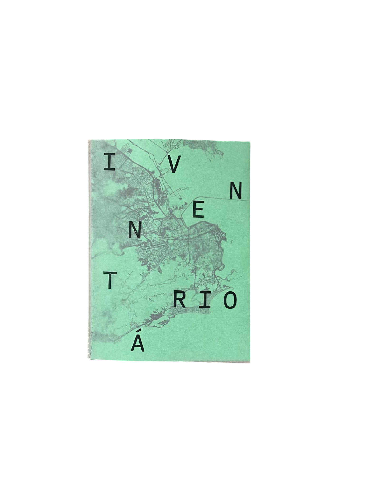
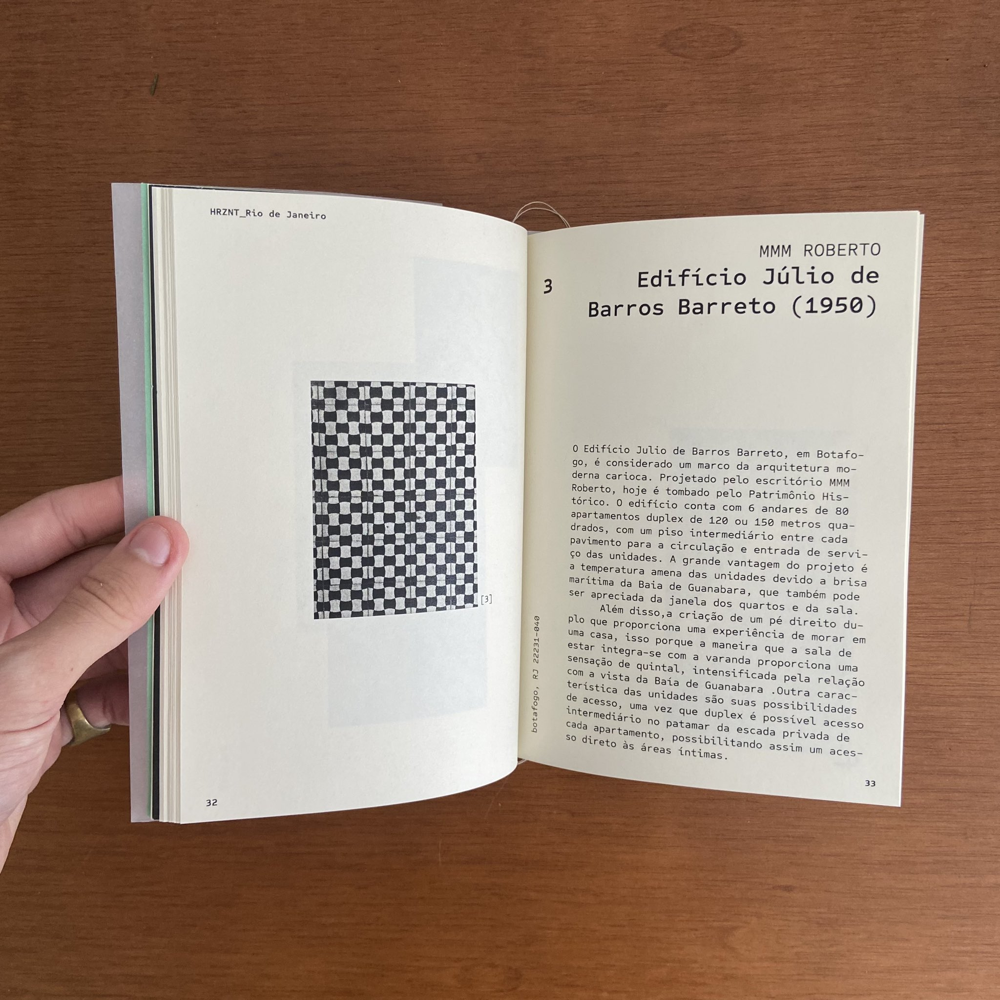
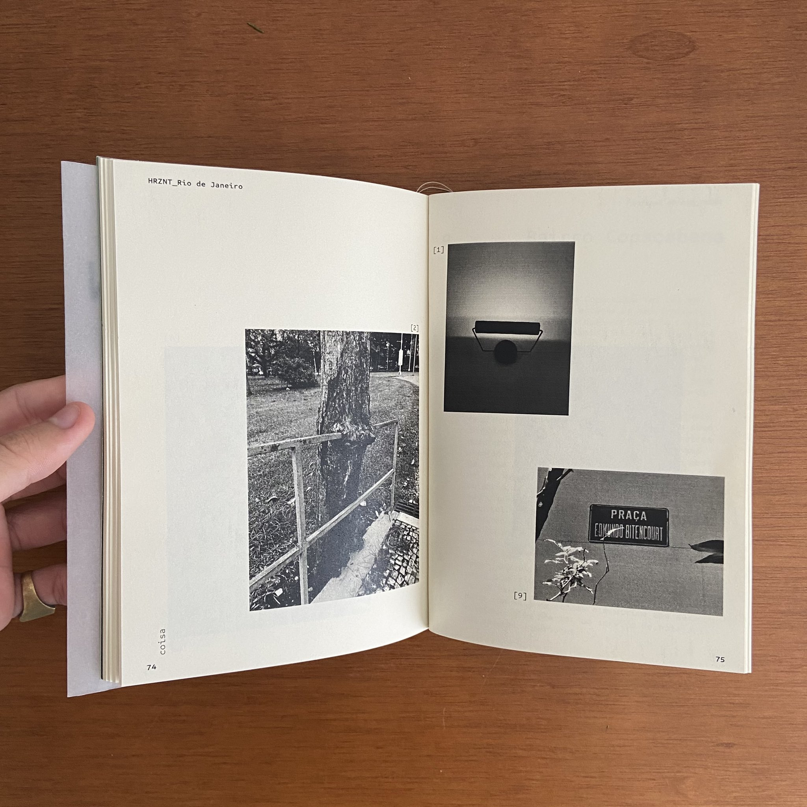
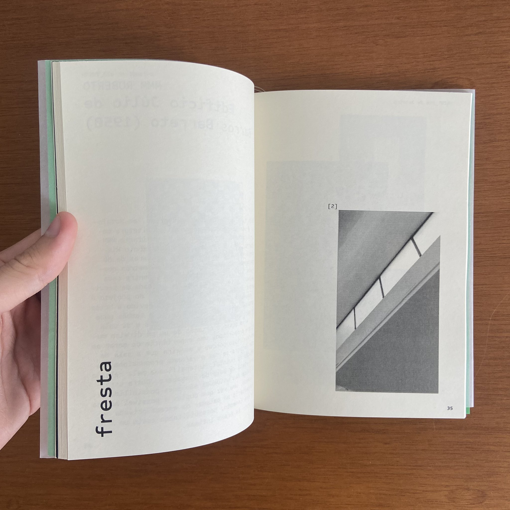

INVENTÁRIO — inventário carioca
2023
inventário carioca" >o inventário carioca — INVENTÁRIO foi desenvolvido no âmbito do projeto HRZNT_Rio de Janeiro com a proposta de registrar e apresentar uma cartografia urbana a partir de um levantamento arquitetônico do patrimônio moderno da cidade.
a organização do material publicado parte do entendimento das dicotomias formais sustentadas pelo espaço urbano: dentro/fora, cheio/vazio, liso/áspero,
opaco/translúcido, orgânico/linear, etc., que são delimitados por elementos diversos: curvas, escadas, texturas, frestas, planos, luzes, pontos e coisas.
o INVENTARIO propõe uma disposição cruzada na relação entre esses dispositivos imagéticos-sensoriais de forma que as imagens produzidas passem a ser
apresentadas conforme os elementos determinados para cada dispositivo, e os projetos arquitetônicos se mostrem em relação, embaralhados, sobrepostos e interligados.



team
orientação
Alziro Neto
Mariana Vieira
apoio
Departamento de Arquitetura e Urbanismo - PUC-Rio
HRZNT_Rio de Janeiro
produção
Breno Samel
Eduardo Schuch
Pamella Bandini
participação
Teo Bressane-Sabadin